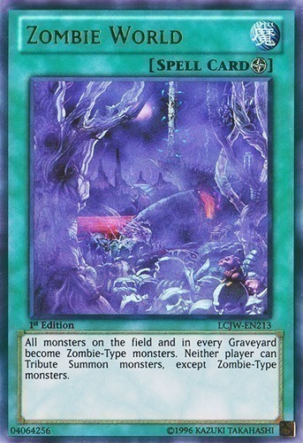
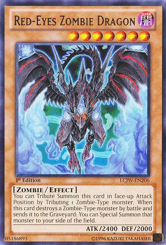

Blog
Sample blog post
Cum sociis natoque penatibus et magnis dis parturient montes, nascetur ridiculus mus.
Heading
Cum sociis natoque penatibus et magnis dis parturient montes, nascetur ridiculus mus.
Sub-heading
Cum sociis natoque penatibus et magnis dis parturient montes, nascetur ridiculus mus.
Sub-heading
Cum sociis natoque penatibus et magnis dis parturient montes, nascetur ridiculus mus.
Sample blog post
Cum sociis natoque penatibus et magnis dis parturient montes, nascetur ridiculus mus.
Heading
Cum sociis natoque penatibus et magnis dis parturient montes, nascetur ridiculus mus.
Sub-heading
Cum sociis natoque penatibus et magnis dis parturient montes, nascetur ridiculus mus.
Sub-heading
Cum sociis natoque penatibus et magnis dis parturient montes, nascetur ridiculus mus.
A Love for the Undead
"You can't summon that. All your monsters are zombies."
Hey everyone. First post of my blog here, and I thought I'd start it all off by talking about one of my all time favorite deck types: Zombies.
The Undead Rise Up
Ever since I was a wee lad and first received a Zombie structure deck, the play style always seemed so cool to me. In line with how zombies are, it focuses on turning your opponents monsters into Zombie types to disrupt them and make your own zombies stronger. It also involves a lot of graveyard revival shenanigans, much in the way zombies come back from the dead. It's a fun control idea that still lives to this day despite Zombie World being older than dirt.
 The Modern Variant
Relatively recently, Zombies received new support in the form of the Zombie Horde structure deck. It features many of the support cards zombies have received over the years, such as Uni-Zombie and Shiranui Solitaire, as well as completely new cards that focus on supporting Zombie World, like Necroworld Banshee who can activate it using her effect, and Glow-Up Bloom, who can summon out zombies while Zombie World is out on the field. All of these cards exist to support two purposes: Synchro summoning powerful monsters, and to bring out the newly introduced Zombie boss monster: Doomking Balerdroch.
He makes for an absolute beast of a boss monster, with the ability to recur himself from the grave every standby phase, as well as one monster negate and one monster banish each turn. Going up against this monster can be a big deal for many decks focused on monster effects. On top of all that, he's got some sick ass artwork, which all culminates to make him one of my favorite monsters ever created in this game.
The Downside of the Dead
Unfortunately, this deck isn't all brains and gains. When this deck bricks, it bricks HARD. Despite having strong plays, the deck has many consistency issues. The best zombie search cards we have are Pyramid Turtle, who needs to be destroyed by battle, and Goblin Zombie, who is a big brick in hand. The deck also loses heavily to Handtraps like Ash and Effect Veiler, as well as the ever so common Called By The Grave, which one will often lose Doomking to.
Nevertheless, in spite of all that, I love this deck as if it were my son, and I'll continue to represent it at my local scene whenever I can. And maybe one day, Konami will answer my prayers and zombies will rise to take the meta.